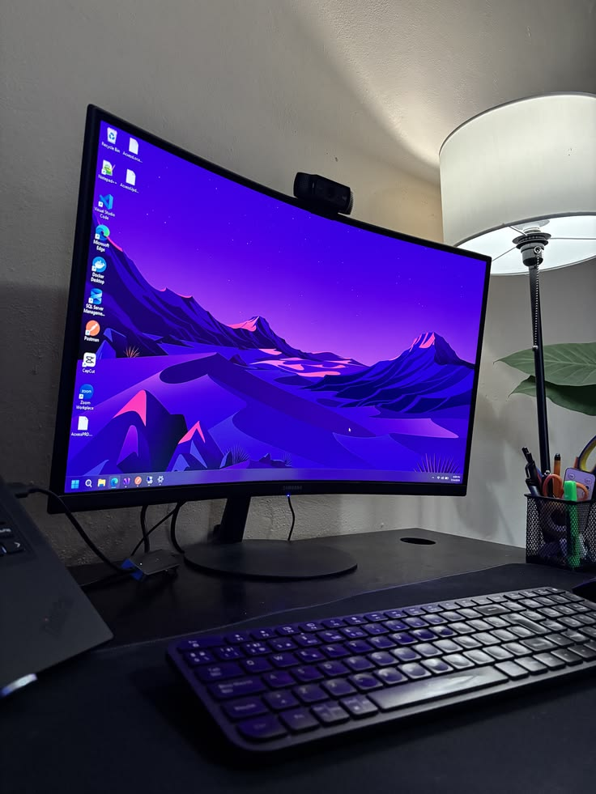
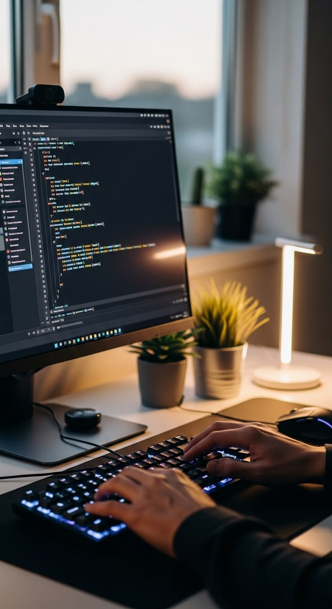
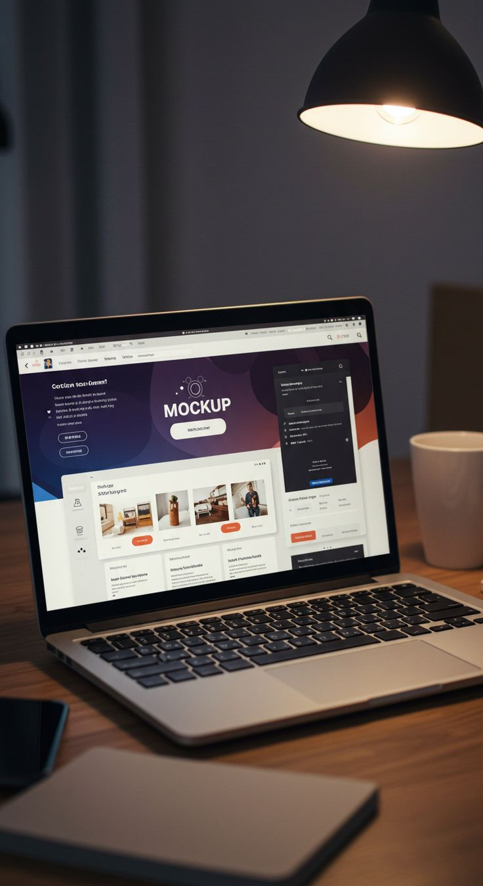

Desenvolvimento Front-end
Criação de interfaces modernas e responsivas, utilizando HTML, CSS e JavaScript para proporcionar uma boa experiência aos utilizadores.

Sou apaixonado por tecnologia e desenvolvimento web, com interesse em criar soluções digitais modernas, funcionais e intuitivas. Estou constantemente a aprender e a desenvolver novas competências em programação, procurando transformar ideias em experiências digitais que façam a diferença.
Criação de interfaces modernas e responsivas, utilizando HTML, CSS e JavaScript para proporcionar uma boa experiência aos utilizadores.

Desenvolvimento da parte interna das aplicações, responsável pela lógica, gestão de dados, servidores e funcionamento das funcionalidades.

Criação de interfaces visuais atrativas e intuitivas, com foco na experiência do utilizador, facilidade de navegação e organização dos elementos.

Criação de um portfólio pessoal utilizando HTML e CSS.
Desenvolvimento de uma loja online.
Criação de um blog pessoal

Criação e manutenção de páginas web utilizando HTML, CSS e JavaScript
Desenvolvimento de websites personalizados para pequenos negócios e projetos pessoais.
Participação na criação de interfaces digitais, protótipos e melhorias na experiência do utilizador.
Criação de websites modernos, responsivos e funcionais, utilizando tecnologias como HTML, CSS e JavaScript, adaptados às necessidades de cada cliente.
Criação de interfaces intuitivas e visualmente apelativas, com foco na facilidade de utilização, organização dos elementos e experiência do utilizador.
Desenvolvimento de aplicações móveis que oferecem soluções práticas e acessíveis, proporcionando uma experiência simples e eficiente aos utilizadores.
Implementação e ligação entre sistemas, servidores e bases de dados, garantindo o correto funcionamento das aplicações e a gestão eficiente da informação.
Partilha a tua ideia ou necessidade comigo através dos meus contactos. Estou disponível para ouvir e conhecer o teu projeto.
Vamos conversar sobre os teus objetivos, definir os detalhes e encontrar a melhor solução para transformar a tua ideia em realidade.
Depois de definirmos tudo, damos início ao desenvolvimento do projeto, acompanhando cada etapa até à entrega da solução final.
Agradeço o teu interesse e o tempo dedicado a conhecer o meu trabalho. Espero que tenhas encontrado algo interessante no meu portfólio.
Tens uma ideia ou um projeto em mente? Estou disponível para conhecer novos desafios e colaborar na criação de soluções digitais.
Gostarias de saber mais sobre o meu trabalho ou discutir uma possível colaboração? Envia-me uma mensagem. Será um prazer conversar contigo.